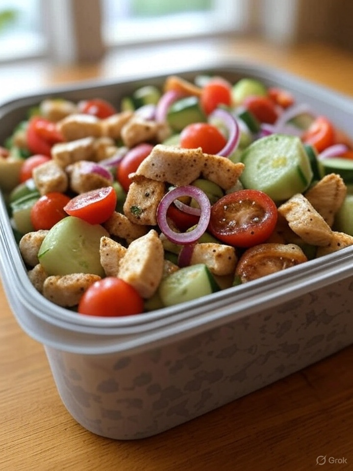

Salada Proteica
R$ 19,90
Uma explosão de cores, sabores e nutrientes em um prato leve e funcional. A Salada Proteica combina folhas frescas e crocantes com uma generosa porção de frango desfiado cozido no vapor, ovos cozidos em ponto cremoso e grão-de-bico macio. Tudo equilibrado com cenoura ralada e um fio de azeite extravirgem, trazendo saciedade e energia sem pesar. Ideal para quem busca alto teor proteico com baixa carga glicêmica.
Informações Nutricionais
Calorias:
320 kcal
Proteínas:
28g
Carboidratos:
20g
Gorduras:
18g
Ingredientes
- Mix de folhas verdes (alface, rúcula)
- Frango desfiado (100g)
- Ovos cozidos (1 unidade)
- Grão-de-bico cozido (50g)
- Cenoura ralada (30g)
- Azeite de oliva, sal rosa e limão